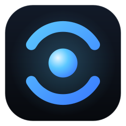

AI AssistantPolítica de Privacidade
Última atualização: 4 de outubro de 2026
O AI Assistant é um aplicativo para Windows (com um app satélite opcional para Android) desenvolvido por Caio Freitas. Esta política explica quais dados o app acessa, como usa, onde guarda e com quem compartilha, em especial os dados das contas Google e Microsoft que você decidir conectar.
Resumo: o app roda no seu computador. O desenvolvedor não tem servidor que receba seus dados: conversas, memórias, configurações e acessos às suas contas ficam no seu PC. O que você pede à assistente vai para o provedor de IA que você configurou, só para gerar a resposta.
1. Dados do Google Calendar (e do Microsoft Outlook/365)
Conectar um calendário é opcional. Ao conectar, o app pede a permissão "Ver e editar eventos em todas as suas agendas" (calendar.events) do Google, ou Calendars.ReadWrite da Microsoft, e usa esse acesso para:
- ler seus próximos eventos (título, horário e local) para responder perguntas como "como está meu dia?" e montar o resumo diário;
- avisar por voz quando um compromisso está chegando, se você ativar os avisos;
- criar um evento quando você pede (ex.: "crie uma reunião amanhã às 14h");
- cancelar um evento quando você pede, se a permissão de ações destrutivas estiver liberada no app.
O app não lê convidados, anexos nem descrições para outros fins, não modifica eventos que você não pediu e não acessa nenhum outro dado da sua conta Google ou Microsoft.
2. Onde os dados ficam
- Acesso às contas (tokens OAuth): guardado no Cofre de credenciais do Windows, no seu usuário, neste PC. Nunca em arquivo de texto e nunca enviado ao desenvolvedor.
- Eventos: são consultados direto do Google ou da Microsoft quando necessários. O app não mantém uma cópia da sua agenda.
- Conversas, memórias e configurações: ficam na pasta do app no seu PC (
%LOCALAPPDATA%\Programs\AI Assistant).
3. Com quem os dados são compartilhados
- Provedor de IA escolhido por você (por exemplo OpenAI, Google Gemini, Anthropic ou um modelo local como o Ollama): quando você faz um pedido que envolve a agenda, os dados do evento necessários para responder (como título e horário) são enviados a esse provedor junto com o seu pedido, só para gerar a resposta. A chave de API é sua, e o uso segue os termos do provedor que você escolheu. Com um modelo local, nada sai do seu PC.
- Mais ninguém. O desenvolvedor não recebe, vende, aluga nem compartilha seus dados, e não usa nenhum dado para publicidade.
4. Uso limitado dos dados do Google
O uso e a transferência, para qualquer outro app, de informações recebidas das APIs do Google seguem a Política de Dados do Usuário dos Serviços de API do Google, incluindo os requisitos de Uso Limitado. Os dados do Google são usados só para oferecer as funções da agenda que você vê e pede no app. Eles não são usados para treinar modelos de inteligência artificial, não são lidos por pessoas (exceto com o seu consentimento explícito, por segurança ou por exigência legal) e não são transferidos a terceiros fora dos casos descritos acima.
5. Como desconectar e apagar
- No app: Central de configurações → Calendário → Desconectar. O acesso é apagado do Cofre do Windows.
- Na sua conta: revogue o acesso em myaccount.google.com/permissions (Google) ou account.microsoft.com/privacy/app-access (Microsoft).
- Para apagar tudo do PC, desinstale o app e remova a pasta
%LOCALAPPDATA%\Programs\AI Assistant.
6. Outros dados
Voz, microfone, tela, WhatsApp e Home Assistant são usados só quando você ativa essas funções e só para atender aos seus pedidos. O processamento acontece no seu PC ou no provedor que você configurou. Registros de erro ficam no seu PC e só chegam ao desenvolvedor se você enviá-los.
7. Crianças
O app não é direcionado a menores de 13 anos.
8. Mudanças e contato
Mudanças nesta política são publicadas nesta página, com a data atualizada. Dúvidas ou pedidos: caio.freitas2598@gmail.com.
English summary
AI Assistant runs locally on the user's Windows PC; the developer operates no server that receives user data. When a user connects Google Calendar, the app requests the calendar.events scope to read upcoming events, announce reminders, and create or cancel events only at the user's request. OAuth tokens are stored in the Windows Credential Manager on the user's device. Event details needed to answer a request may be sent, together with that request, to the AI provider the user configured with their own API key. Google user data is not sold, used for advertising, used to train AI models, or shared with anyone else. AI Assistant's use and transfer of information received from Google APIs adheres to the Google API Services User Data Policy, including the Limited Use requirements. Contact: caio.freitas2598@gmail.com.